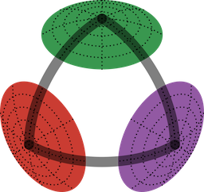
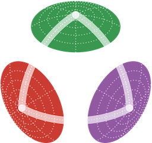
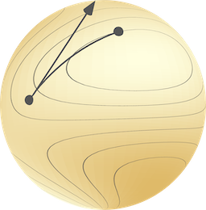

ManifoldsBase.jl
An interface for manifolds in Julia
Define your own Riemannian manifolds. Use abstract manifolds in your code.
Lightweight
Based on an AbstractManifold this interface allows to define own manifolds easily. Furthermore, operations and algorithms on arbitrary manifolds can be defined using this interface package.
Efficient
When possible, functions are available working in-place, like exp! or log! to reduce memory allocations.
Ecosystem
Several Meta-Manifolds in this package but also further packages like ManifoldDiff.jl, ManifoldDiffEq.jl or ManifoldsGPU.jl provide a whole ecosystem to work with manifolds.


Manifolds.jl
A comprehensive library of Riemannian manifolds is available in Manifolds.jl to get you started directly on the most common manifolds.

Manopt.jl
Optimisation algorithms on any manifold following this interface are available in Manopt.jl. Both smooth optimization, like gradient descent, quasi-Newton and nonsmooth, like proximal-gradient or other splitting based methods are available.
LieGroups.jl
LieGroups.jl extends the interface to Lie groups and uses Manifolds.jl to define a library of Lie groups. Further features of this package are an abstract definition of a Lie algebra and group actions as well as generic Lie groups like the semi-direct product Lie group.
ManifoldsBase.ManifoldsBase — Module
🏔️ ManifoldsBase.jl: An interface for manifolds in Julia
- 📚 Documentation: juliamanifolds.github.io/ManifoldsBase.jl/
- 📦 Repository: github.com/JuliaManifolds/ManifoldsBase.jl
- 🎯 Issues: github.com/JuliaManifolds/ManifoldsBase.jl/issues
This packages has two main purposes. You can add it as a dependency if you plan to work on manifolds (generically) or if you plan to define own manifolds in a package. For a package that (only) depends on ManifoldsBase.jl, see Manopt.jl, which implements optimization algorithms on manifolds using this interface. These optimisation algorithms can hence be used with any manifold implemented based on ManifoldsBase.jl.
For a library of manifolds implemented using this interface Manifolds.jl.
Your package is using ManifoldsBase? We would like to add that here as well. Either write an issue or add yourself by forking, editing this file and opening a PR.
Citation
If you use ManifoldsBase.jl in your work, please cite the following paper, which covers both the basic interface as well as the performance for Manifolds.jl.
@article{AxenBaranBergmannRzecki:2023,
AUTHOR = {Axen, Seth D. and Baran, Mateusz and Bergmann, Ronny and Rzecki, Krzysztof},
ARTICLENO = {33},
DOI = {10.1145/3618296},
JOURNAL = {ACM Transactions on Mathematical Software},
MONTH = {dec},
NUMBER = {4},
TITLE = {Manifolds.Jl: An Extensible Julia Framework for Data Analysis on Manifolds},
VOLUME = {49},
YEAR = {2023}
}Note that the citation is in BibLaTeX format.